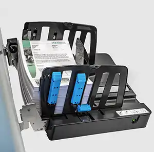

Diagram of PrinterTypes of Drum Machines: one drum color means the printer uses only one ink drum so the
entire print is made with a single ink color. Two drum colors means the printer uses two separate
ink drums, printing two colors in separate layersInk Drums are placed inside a drum screen and case Soy Based Inks are made by extracting oil from soybeans and mixing it with pigments, resins,
and additives which allow the pigments to appear more vibrant and reflective on paperMasters wrap around the ink drum which is used to distribute inkInk colors are manually placed for each round of printingType of paper used for risograph printing

Paper gets placed in the track and printing can begin